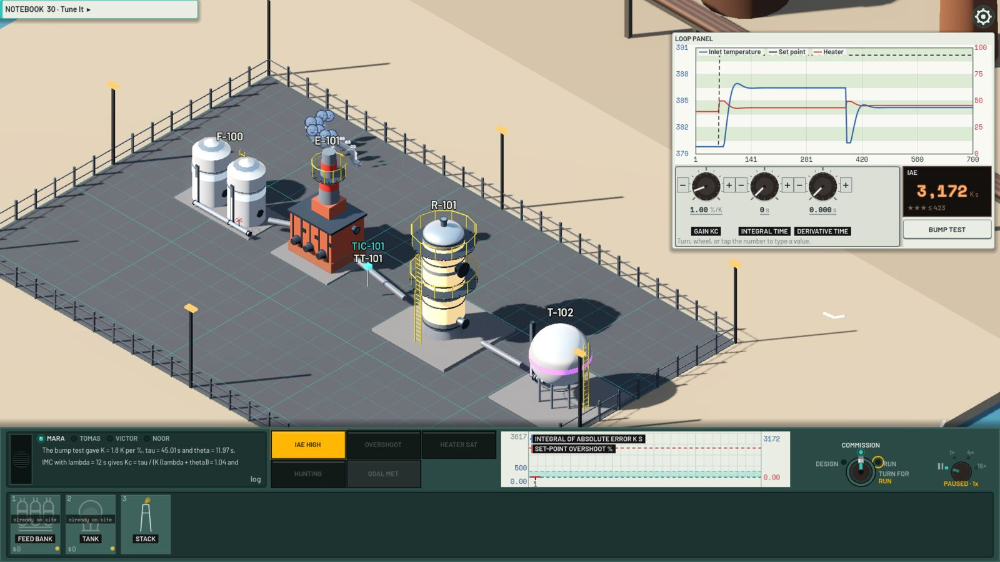
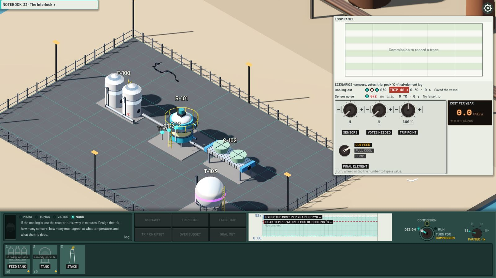

What it teaches. Control loops, tuning and alarms. You bump a loop, tune it, and set a trip you can trust.
5 jobs: L29 to L33. Site: Control room. All of its jobs are drawn in the new look: a 3D hall and lab.

Classic look. L30 Tune It: bump test, IMC tuning and the error readout

Classic look. L33 The Interlock: sensors, votes and the trip point
L29 Hold the Line New look
Control room, feed drum D-101
Brief
The feed drum has to sit at half. When the upstream unit pushes more in, the level must not wander. Two dials: gain and integral time.
Gain alone leaves a gap. Watch the chart, then add the integral.
Given for the call-it: the outlet valve is the controller output with a bias of 50 %, and the upstream unit steps the inflow from 50 % to 60 % of valve capacity. A P-only controller moves its output only as far as the error times Kc. Call it: predict before your first commission. The answer box locks when you commission; a right call earns a star.
Goal
Level back within 1 % of the set point
Level never more than 4 % off the set point
Overshoot at most 10 % of the peak
Stars
Goal met: offset, peak and overshoot inside the limits
Call it: the offset of a P-only loop at the gain shown, within 5 %
IAE at or below the reference tuning (about 154 % s): Kc near 4 with tauI near 60 s gets there
If it fails
The printout names one of these when a goal is missed:
Over budget.
The level settles off the set point.
The loop overshoots.
The level wandered too far.
The integral is too slow.
Coach steps (hints that show how to build)
Open the two dials by the drum: gain Kc and integral time tauI. Leave tauI at zero first.a proportional controller moves the valve only in proportion to the error, so it needs an error to hold the valve open.
Turn the key and watch the chart recorder: the inflow steps up at one minute.the recorder shows what the loop does, not what you meant it to do.
Read the end of the level trace: how far from the set point does it settle?the valve must pass the new inflow, so it stays open wider, and a P-only loop only opens wider if the level stays off.
Now give it an integral time near a minute and run it again.the integral keeps adding valve opening while any error remains, so the offset goes to zero. Pushed too hard, it rings.
Ask Why? and read the offset against dq over Kc.the explanation is built from your own gain.
L30 Tune It New look
Control room, converter inlet TIC
Brief
Do not guess the gain. Bump the heater five percent, read what the inlet temperature does, then use lambda equal to the dead time.
Gain = tau over K times lambda plus theta. Integral time = tau. The heater must not hit its stops.
Given for the call-it: the BUMP TEST key on the panel shows the open-loop trace with K, tau and theta pencilled on it, before you commission anything. Lambda is the dead time theta. Call it: predict before your first commission. The answer box locks when you commission; a right call earns a star.
Goal
Integral of absolute error at most 500 K s
Heater never at a stop (0 % of the time)
Set-point overshoot at most 25 %
Stars
Goal met: IAE, no saturation, overshoot inside the limits
Call it: the IMC gain from your bump test, within 5 %
IAE at or below the reference IMC tuning
If it fails
The printout names one of these when a goal is missed:
Over budget.
Too much overshoot.
The heater hit its stops.
Too slow.
Coach steps (hints that show how to build)
Run the bump test: five percent more heater, open loop, and read the inlet temperature on the recorder.the plant tells you its own gain, lag and dead time if you push it once and watch.
Read K (final change over the bump), the dead time before it moves, and tau from the 63 % point.three numbers describe the whole process well enough to tune it: K, tau and theta.
Put Kc and tauI on the dials by the IMC rule. tauI equals tau.matching the integral time to the process lag cancels the slow pole, and lambda sets how brisk the loop is.
Turn the key and read the response to the set-point step and the cold-feed load.a tuning is only good if it handles both a set-point change and a disturbance.
Ask Why? and compare your gain with the rule.the explanation is built from your bump test.
L31 Ratio New look
Control room, synthesis gas feeds
Brief
The nitrogen header surges and the hydrogen follows a fixed flow. Every time the nitrogen drops, hydrogen goes out of the vent. Put a ratio station on it.
The ratio is moles, as in L01. Tune the hydrogen flow loop so it follows quickly without ringing.
Given for the call-it: the synthesis reaction is N2 + 3 H2 -> 2 NH3, and the converter must be fed in exactly its stoichiometric proportion. Call it: predict before your first commission. The answer box locks when you commission; a right call earns a star.
Goal
Vented H₂ at most 2 % of the H₂ fed
All vented gas at most 3 % of the feed
Stars
Goal met: hydrogen and total vent inside the limits
Call it: the H₂ to N₂ ratio of the feed controller, within 1 %
Hydrogen vent at or below the reference tuning
If it fails
The printout names one of these when a goal is missed:
Over budget.
Hydrogen is on a fixed flow.
The follower is too slow.
The ratio is wrong.
Coach steps (hints that show how to build)
Switch the ratio station on: the hydrogen set point will follow the nitrogen meter.a fixed hydrogen flow cannot know that the nitrogen dropped. A ratio station feeds the measurement forward.
Set the ratio in moles, not kilograms. One nitrogen takes three hydrogen.the converter counts molecules; the L01 lesson again.
Turn the key and read the H₂ flow against the N₂ surges.the follower lags the leader, and the lag is where the vent comes from.
Ask Why? and see where the hydrogen went.the vent total is built from your own flows.
L32 Cascade New look
Control room, converter bed TIC
Brief
The bed is cooled by quench flow. Header pressure sags now and then and the quench flow drops. The bed temperature will not tell you for a minute.
Let a fast flow loop sit inside the slow temperature loop. The slave must be much faster than the master.
Given for the call-it: with nobody controlling, the bed gains 1.2 K for every percent of quench flow lost, and the header sag takes 20 % of the quench. Call it: predict before your first commission. The answer box locks when you commission; a right call earns a star.
Goal
Bed within 3 K of the set point during the header sag
Integral of absolute error at most 1,500 K s
Stars
Goal met: the header sag stays small and the total error low
Call it: how many K warmer the bed ends with nobody controlling, within 5 %
IAE at or below the reference cascade (about 852 K s): slave Kc 2 / 6 s, master Kc 1.5 / 150 s (the bed's own time constant)
If it fails
The printout names one of these when a goal is missed:
Over budget.
One loop is too slow for this disturbance.
The bed is too slow to recover.
The flow loop is too weak.
Coach steps (hints that show how to build)
Switch the cascade on: the temperature controller will set the quench flow set point.the flow loop corrects a pressure sag in seconds; the temperature loop would need minutes.
Tune the slave first (fast), then the master on top of it, slower.the master sees the slave as a fast part of its process; if both are fast they fight.
Turn the key and compare the sag with and without the cascade.a disturbance that enters the inner loop is rejected before it reaches the bed.
Ask Why? and see the open-loop rise.it is the gain times the disturbance, the size of the problem.
L33 The Interlock New look
Control room, safety instrumented function
Brief
If the cooling is lost the reactor runs away in minutes. Design the trip: how many sensors, how many must agree, at what temperature, and what the trip does.
Why a vote and why the element matters: a miss costs the plant, a false trip costs a batch, and any sensor can fail either way. The feed ramps out over 10 s and the vessel still holds reactant, full coolant is useless when the cooling itself is lost, and only DUMP removes the reactant, so DUMP can catch what CUT FEED cannot. The strip shows each case's peak and lag. Call it: predict before your first commission. The answer box locks when you commission; a right call earns a star.
Goal
Runaways not caught: 0
False trips in the nuisance cases: 0
Stars
Goal met: both demands caught and no false trips
Call it: the adiabatic temperature rise of the reactor contents, within 5 %
Expected annual cost at or below the reference design
If it fails
The printout names one of these when a goal is missed:
Over budget.
A failed sensor hid the demand.
The trip came too late or does too little.
The trip fires on a cooling upset.
One bad sensor trips the plant.
Coach steps (hints that show how to build)
Watch the unprotected run: the chart shows the reactor with no trip after the cooling is lost.the time you have is set by the reaction, not by the plant clock.
Set the four dials: sensors, how many must agree, the trip temperature, and the final element.more sensors cut both kinds of failure only if the voting uses them. A partial cooling upset must not trip.
Turn the key to replay the five cases.a trip is judged by the demands it catches and the nuisances it ignores.
Ask Why? and read the cases.each case shows which of your choices decided it.